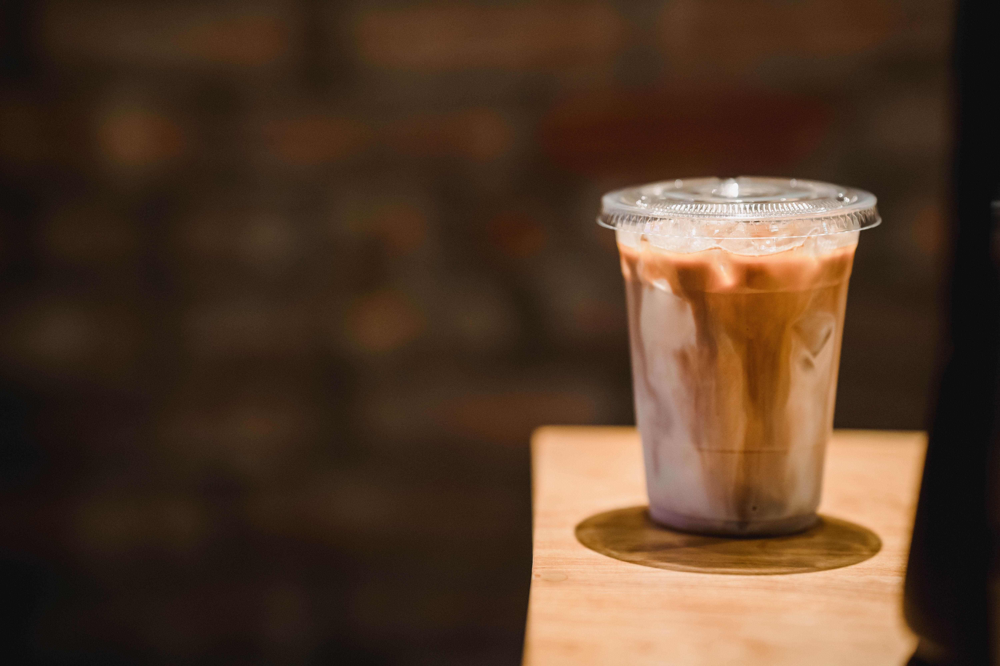

Cappuccino
Café com leite cremoso e espuma.
R$ 12,00Clique em um item para destacar o produto.
Café com leite cremoso e espuma.
R$ 12,00Café leve, ideal para o dia a dia.
R$ 9,00Refrescante, moderno e saboroso.
R$ 14,00
Maior proporção de leite, ideal para quem prefere um café menos intenso.
R$ 12,00Mistura de café, leite e chocolate, geralmente adoçado, oferecendo uma experiência doce e cremosa.
R$ 9,00Bebida gelada e cremosa, feita com café, leite e gelo, muitas vezes com sabores adicionais.
R$ 14,00Querendo conhecer melhor o nosso projeto, patrocinar, colaborar?